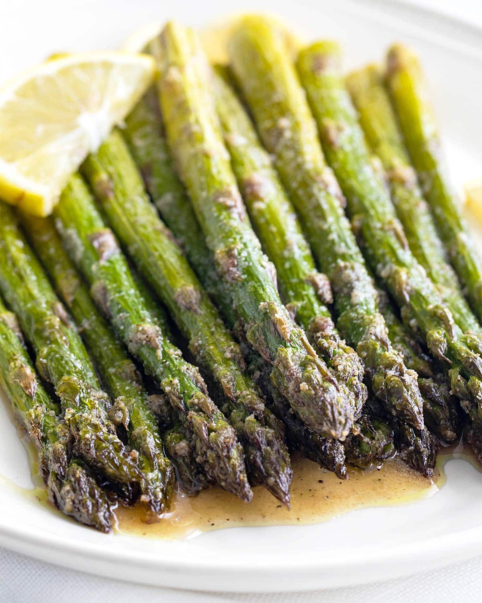

Home
Oven-Roasted Asparagus

Description
Oven-roasted asparagus with garlic, lemon, and Parmesan makes for a flavorful and effortless side dish.
The roasting process enhances its natural sweetness while eliminating any bitterness. Serve it alongside grilled fish or lamb for a delicious pairing.
Ingridients for oven-roasted asparagus
- 1 bunch of fresh asparagus, trimmed
- 2 tablespoons olive oil
- 2 cloves garlic, minced
- 1 teaspoon lemon zest
- 1 tablespoon lemon juice
- ¼ cup grated Parmesan cheese
- ½ teaspoon salt (or to taste)
- ¼ teaspoon black pepper (or to taste)
- Optional: red pepper flakes for a bit of heat
Steps
- Preheat the oven to 400°F (200°C). Line a baking sheet with parchment paper or lightly grease it with oil.
- Prepare the asparagus by trimming the woody ends. Arrange them in a single layer on the baking sheet.
- Season the asparagus by drizzling olive oil over them, then sprinkle the minced garlic, lemon zest, salt, and black pepper. Toss everything to coat evenly.
- Roast in the oven for 12-15 minutes, or until the asparagus is tender and slightly crispy at the tips.
- Add the final touches by squeezing fresh lemon juice over the roasted asparagus and sprinkling the Parmesan cheese on top.
- Serve immediately as a delicious side dish with grilled fish, lamb, or your favorite main course.